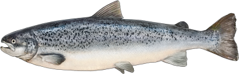
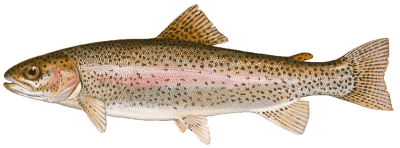

GEO-NVG1


The GEO-NVG1 is a russian gen 3 night vision binocular system designed for use in aircraft. It can run form an external 3.5v supply from the host aircraft, or from two AA batteries installed in the device.
Uses the standard russian aviation night vision / HUD mounting system, though this can be adapted to standard mounting shrounds. I have made and sold some adapters for this purpose.
The front lenses have the focus fixed to infinity, and have a reflective coating applied that filters out some artificial light wavelengths. In my testing the light from a standard (visible) torch, shone somewhere on the ground in front of the goggles, was barely picked up by the intensifier tubes. It uses 37mm wired image intensifier tubes, some people have adapted these with contact plates for use in different housings.
An older goggle design, the ONV-1 Skosok, was replaced with the GEO-ONV1 (not NVG1!) goggles following a helicopter crash in Syria in 2016. It's not known whether the GEO-NVG1 goggles were also replaced, though the pod design, including the reflective coating on the GEO-ONV1 appears to be more similar to the NVG1.